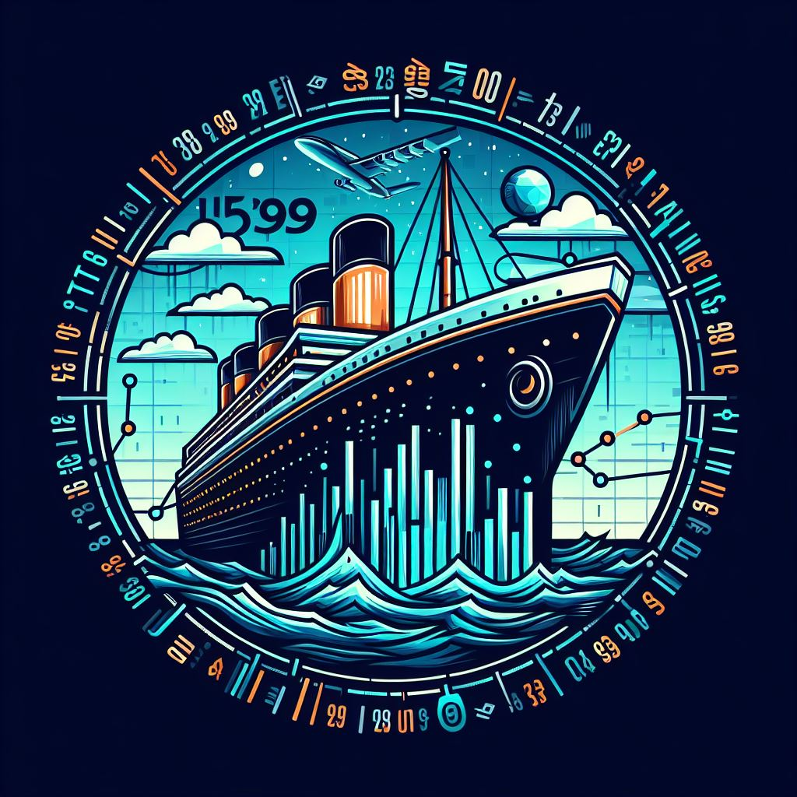

Skill Summary
Coding ●●●●○
Proficient in multiple programming languages and frameworks, enabling the creation of efficient and scalable software solutions.

Python
Data Modelling ●●●●○
Experienced in designing and implementing robust data models to ensure data integrity, scalability, and performance.
Data Visualization ●●●●○
Skilled in presenting complex data in an understandable and visually appealing manner to facilitate informed decision-making.
Data Cleanup and Preparation ●●●●○
Adept at preprocessing and cleansing data, ensuring its accuracy and relevance for further analysis or modeling.
Data Science/Advanced Analytics ●●●○○
Expertise in extracting insights from data, building predictive models, and leveraging advanced analytical techniques.
Other
These are other tools that I make use in conjunction with many of the aforementioned tools.

ChatGPT

Excel

PowerPoint

Docker

Selenium
Platforms
These are some of the platforms that I use to improve and showcase my technical capability.
Welcome to my world of data analytics where dedication meets innovation.
Here, you'll find a collection of my professional work highlighting my journey in data analysis, with a focus on showcasing my skillset.
Dive into my projects to see how I deal with data in a number of scenarios.

Titanic Dataset (EDA) - Kaggle
Welcome to my exploration in data science, where curiosity fuels discovery and learning leads to mastery. This portfolio is a testament to my ongoing journey in the realm of data science.
It’s a space where I continuously learn, test, and apply different techniques to unravel the stories hidden within data.

Titanic Dataset (ML) - Kaggle
Discover my general purpose portfolio, a showcase of dedication and skill across various challenges, from algorithmic puzzles to other general milestones that don't conform to the other specialist porfolios.
It’s a an additional testament to the journey of growth and the relentless pursuit of excellence.